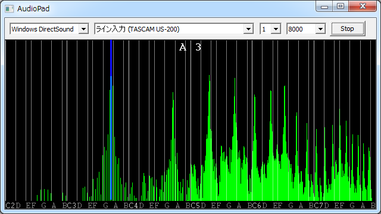
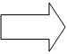
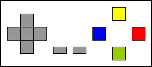
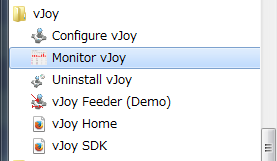
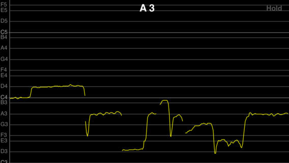

最終更新日：2016/7/12
パソコンのマイクから入力した音声で操作する仮想ゲームパッドです。音階にゲームパッドの操作を対応させることができます。音階とゲームパッドの操作は任意にアサインが可能です。動作には、vJoyが必要です。|  |  |  仮想ゲームパッドドライバ(vJoy)
|
音階をゲームパッドのボタンにアサインするには、インストールしたフォルダ(AudioPad.exeと同じフォルダ)にある「AudioPad.cfg」をメモ帳などのテキストエディタで編集します。
下記の例のように、
音階名 = アサインする軸またはボタン
を1行ずつ記述します。
音階名は、英語表記の音階名にオクターブを表す数字を付けて表します。
#は音階名に#を付けて表します。(♭は記述できません。)
1つの音階に複数ボタンをアサインするにはカンマ区切りで記述します。（カンマの間にスペースは記述できません。）
X、Y軸の方向は+、-を付けて表します。（上はY+、下はY-、左はX-、右はX+）
ボタンは1～8が使用可能です。
C3 = Y+
C#3 = X-,Y+
D3 = X-
D#3 = X-,Y-
E3 = Y-
F3 = Y-,X+
F#3 = X+
G3 = X+,Y+
G#3 = 1
A3 = 2
A#3 = 3
B3 = 4
C4 = 5
C#4 = 6
D4 = 7
D#4 = 8
音階を判定する音量の閾値は、
threshold = 0.8
のように記述します。誤動作が多い場合は調整してください。
解析する音階の範囲は、
analyze_begin = C3
analyze_end = C5
のように記述します。
ボタンを割り当てた音階に範囲を絞ることで誤動作が少なくなります。
C2～C7の範囲で設定してください。
画面上、解析範囲が薄くハイライトされます。
音を鳴らしてから反応するまでの時間は、
sensitiveを1～10の範囲で設定します。
sensitive = 6
の場合、6フレーム(1秒60フレーム)=100msです。
値が小さいほど反応が速くなりますが、誤動作が多くなります。
正常に動作しているか確認するには、vJoyの「Monitor vJoy」を使用します。
スタートメニューからvJoyの「Monitor vJoy」を起動してください。
本ソフトウェアはフリーソフトです。どなたでも無料で使用できます。
ニコニコ動画でゲーム動画等を投稿されている倭寇さんから依頼があり作成したソフトです。
したがって、発案者は倭寇さんになります。
なお、著作権は作者に帰属します。
また、本ソフトウェアは使用した結果については、作者は一切責任を負えないためご了承ください。
倭寇さんが投稿された実況動画です。
同じく、倭寇さんが投稿されたこのソフトを作成した経緯についての動画です。
倭寇さんが投稿された動画がニュース記事で紹介されました。
「腹痛いｗ」声でマリオを操作、「スーパーマリオ3」実況動画が話題に。- Narinari.com
【やじうまWatch】爆笑必至、音程操作ソフトを使ってマリオをプレイするミュージカル風の動画 - INTERNET Watch
「マリオさんいっちゃうよーん！！！」――マリオ3を声で操作する動画がミュージカルみたいで腹痛い - ねとらぼ
ニコニコ動画主催のイベント「闘会議2015」（2015/1/31、2/1開催）で、「Audio Pad」が使用されました。
リアルゲームエリアで、「AudioPad」で声で操作するミニゲームが遊べました。
ver 1.11 2016/7/12 反応の速さを設定できるようにした
ver 1.10 2016/6/22 異常終了するバグ修正、vJoy最新版対応、誤検知改善、画面表示改善
ver 1.00 2014/7/28 初版公開
|  iPhoneアプリ VocalPitchMonitor |
 iPhoneアプリ AudioSpectrumMonitor |
山岡忠夫